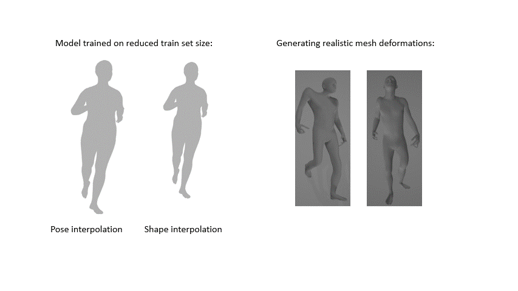

I strongly believe that ML and computing should be a force for good. I have had the pleasure of working on ML for the common good projects in both academic and industry setting.
Find out more about my work at UMass Center for Data Science, Wadhwani AI and IISc Bangalore below.
Building Segmentation and Damage Assessment on Satellite Imagery
Worked on building segmentation and damage assessment on satellite imagery to help the Red Cross in
their disaster relief works.
Collaborated with Microsoft's AI for the Good Research Lab and UC Berkeley's BAIR Lab
to develop an end-to-end platform for post-disaster building segmentation and damage assessment on real-time
satellite images from across the globe.
Our platform has functionalities for inference, evaluation, visualization and fine-tuning on real-time
satellite imagery using existing pre-trained building localization and damage assessment models.

3D Parametric Model Building for AI-based Anthromopometry
Worked on 3D parametric model building using unsupervised shape and pose disentanglement
on AMASS dataset (a large and varied database of adult
human motion).
Performed rigorous experiments to study the impact of 1) train set size and 2) mesh deformations on
model's performance.
Some insights from this work to be potentially used in Wadhwani AI's anthropometry project. This project aims to develop an
AI solution for estimating the weight of a baby from a set of baby pictures or a video in order to provide timely care to low birth weight babies and hence reduce infant morbidity and/or mortality.
I2DNet: Design and Real-Time Evaluation of Appearance-based gaze estimation system
Research Internship at I3D Lab, IISc Bangalore
(Jul-Nov 2020)
Worked on appearance-based gaze estimation systems- with a motivation to develop gaze controlled interface for the use of
physically challenged people.
Performed rigorous experiments to come up with I2DNet, a novel architecture that achieved
state-ofthe-art subject independent gaze estimation accuracy.
Conducted user-study in real-time interactive setting to validate our mode's performance.